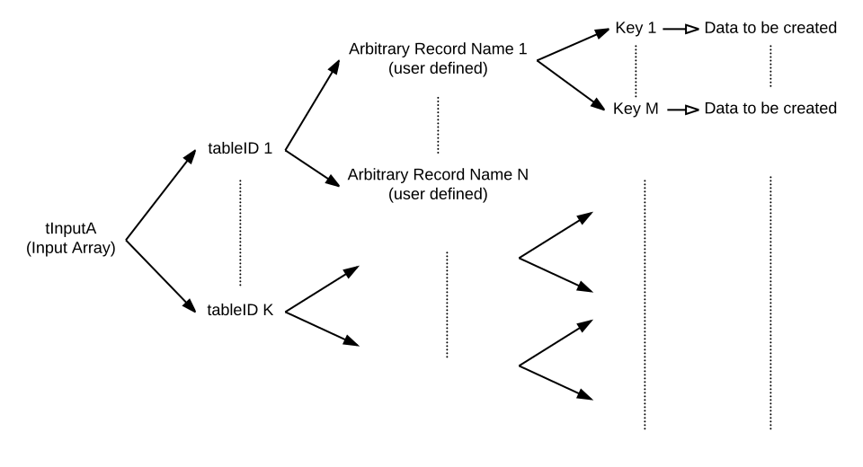

function cdb_batchCreate(pInputA)
Summary
This function allocates new cdbRecordIDs and stores provided data for a batch of records across one or more tables.
Inputs
- pInputA (Array) - A multidimensional array, where each key is a tableID. This tableID can be obtained by calling the function cdb_getTableID and passing in the table name, returns the table's unique ID. There must be at least one table ID key in the array.
- ["cdbTarget"] (String) - place to create records, either "cloud" or "local"
- [tableID 1] (Array) - key that is the first table's ID, which maps to another array of arbitrary recordKeys, where each recordKey maps to a record. There must be at least one record key in this sub-array.
- [indexKey 1] (Array) - An arbritrary user-defined name for a record. Recommended names are 1, 2, ..., N. This key maps to a sub-array of keys with data.
* [keyName 1] (String) - The data the user wants to store in this keyname in this record in this table.
* [keyName N] (String)* - The data the user wants to store in this keyname.
- [indexKey N] (Array) - The nth record. Repeat indexKey 1*'s sublevel structure.
- [indexKey 1] (Array) - An arbritrary user-defined name for a record. Recommended names are 1, 2, ..., N. This key maps to a sub-array of keys with data.
* [keyName 1] (String) - The data the user wants to store in this keyname in this record in this table.
* [keyName N] (String)* - The data the user wants to store in this keyname.
- [tableID N] (Array) - Nth table to create records in. Repeat tableID 1*'s sublevel structure.
*optional parameter.

Outputs
(Array) -- This output array has similar structure to the input array, except that the indexKeys has the cdbRecordID as a child key. The corresponding cdbRecordID keys have empty contents.

Additional Requirements
This API call requires internet access if the 'cloud' option is selected
API Version
- 0.3.1 - Introduced
Examples
local tInputA, tOutputA, tClientsTableID, tOfficeTableID
# Table name: clients
# Keys: firstName, lastName, age, income
put cdb_getTableID("clients") into tClientsTableID
# Table name: office
# Keys: name, address
put cdb_getTableID("office") into tOfficeTableID
put "John" into tInputA[tClientsTableID]["a"]["firstName"]
put "Smith" into tInputA[tClientsTableID]["a"]["lastName"]
put "47" into tInputA[tClientsTableID]["a"]["age"]
put "100000" into tInputA[tClientsTableID]["a"]["income"]
put "Jenny" into tInputA[tClientsTableID]["b"]["firstName"]
put "Smith" into tInputA[tClientsTableID]["b"]["lastName"]
put "47" into tInputA[tClientsTableID]["b"]["age"]
put "100000" into tInputA[tClientsTableID]["b"]["income"]
put "Smith's Tech" into tInputA[tOfficeTableID][1]["name"]
put "123 office road" into tInputA[tOfficeTableID][1]["address"]
put "cloud" into tInputA["cdbTarget"]
put cdb_batchCreate(tInputA) into tOutputA
# output array:
# tOutputA[tClientsTableID]["a"] - "12345678-abcd-1234-cdef-1234567890ab"
# CDBRecordID for John Smith
# ["b"] - "87654321-abcd-1234-cdef-1234567890ab"
# CDBRecordID for Jenny Smith
# [tOfficeTableID][1] - "45678123-abcd-1234-cdef-1234567890ab"
# CDBRecordID for Smith's Tech